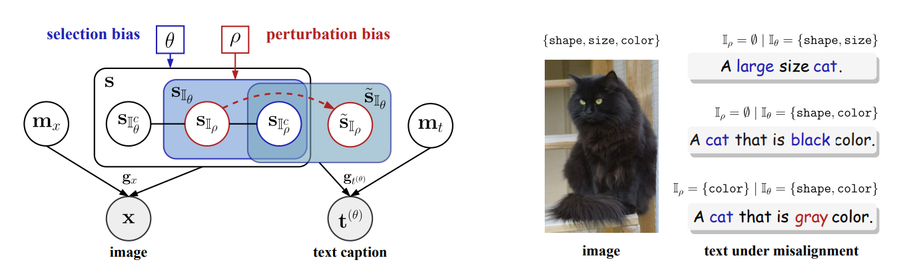
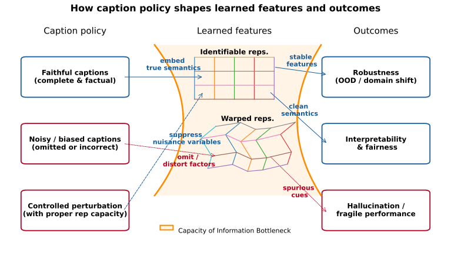
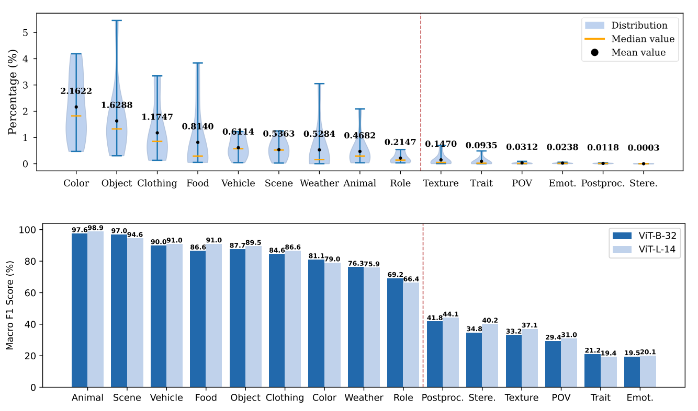

Usefulness is not alignment #
This is how I currently think about many multimodal large language models. The museum is the visual world: rich, structured, and far larger than the set of questions we usually ask about it. The visitor requests are the language instructions used during training. The tour guide is the multimodal system: a visual encoder, a projector, and a language model trained to return the right answer when prompted. The professional test is our benchmark culture.
The guide’s success is real. Likewise, the success of current MLLMs is real. They are useful, impressive, and often commercially valuable. I understand why industry is excited by this paradigm: a system that can answer questions about images and follow visual instructions is already a powerful tool.
But as researchers, we should ask a deeper question. Does the model merely learn useful routes through the museum, or does it learn the map? Does it only retrieve answer-relevant visual information when queried, or does it acquire a representation in which vision and language are genuinely coordinated?
This distinction matters because usefulness is not the same as alignment. Strong performance shows that a model can use visual information for language generation. It does not, by itself, show that the model has learned a shared representational structure between the visual and linguistic worlds.
This is the illusion of modality alignment. We see a guide who retrieves books efficiently, and we infer that the museum has been organized. We see a model answer visual questions fluently, and we infer that vision and language have been aligned. In both cases, the inference is tempting. In both cases, it may be wrong.
The supervision bottleneck: the loss only sees the answer #
The issue is not simply that current MLLMs use a visual encoder, a projector, and a language model. The deeper issue is the form of supervision. Visual instruction tuning does not ask the model to reconstruct the visual world, organize it, or align it with language. It asks the model to produce the right answer.
This creates a supervision bottleneck. The image may contain a rich visual structure, but the training signal reaches the model only through a narrow channel: a question and an answer. Anything in the image that does not change the answer is invisible to the loss. It may be present in the pixels, and even present in the visual encoder, but if it never affects the answer tokens, the training objective has no reason to preserve it, expose it, or align it.
This is why I do not think strong visual question-answering performance is sufficient evidence of modality alignment. The model may have learned the conditional structure needed for answering: given this question, which visual features should be routed into the language model? That is a powerful ability. But it is weaker than learning a shared representational structure between vision and language.
Our Route: Language as an Inductive Cue and Its Challenges #
Achieving identifiability comes with caveats. There are many ways to compress data; pretext tasks, learning objectives, model capacity, optimization dynamics, and dataset properties all shape the optimization landscape and thus the learned representations. Different research threads emphasize different levers; we focus on the data. We center our attention on data because, regardless of the algorithm, knowledge originates there.
In particular, we value language as an inductive cue for learning representations from unstructured modalities such as images. Natural language, invented by humans and carrying our culture and concepts, provides a practical semantic scaffold. Using text as guidance is compelling, witness the strong organization of visual features in CLIP-style models. Yet CLIP-based features have well-documented issues: hallucinations and vulnerability to spurious cues. Moreover, many modern vision-language systems (e.g., LLaVA-style VLMs, MLLMs, and text-to-image generators) build upon CLIP encoders and can inherit these weaknesses.
Our Endeavors So Far: Modeling Caption Noise in Training Data and Its Consequences #
Motivation #
Large-scale multimodal learning (with language as an auxiliary modality) often relies on web-scale image-caption corpora. These data are noisy: captions omit details or misdescribe them. In our NeurIPS 2025 paper, we asked: Can we model these noise patterns formally? And: When are such misalignments harmful, and when can they be harnessed for robustness?
Theory Claims #
We formalize image-text generation with shared semantic factors plus modality-specific noise. Two biases characterize text-caption misalignment: selection bias (captions omit factors) and perturbation bias (captions randomly misdescribe factors).

Theorem 4.1 (informal): Contrastive multimodal learning identifies only the unbiased semantic subset shared across modalities; omitted or corrupted factors are excluded under appropriately constrained representation dimensionality, and modality-specific noise is discarded, regardless of latent causal dependencies.
Intuitively, contrastive models can only align what both views consistently share. Missing or stochastically perturbed details are not learned, even when they matter in the world. Furthermore, if dimensionality is over-generous and effective sparsity is absent, the extra capacity may inadvertently encode non-identifiable, noisy information.
Key Insights for Practice #
This yields two practical insights:
- Faithful captions for coverage: In large-scale pretraining, hallucinations arise when models infer semantics that captions omit or distort; key semantics may be missing. Faithful captions are essential because foundation models prioritize generalization and reuse. With sufficiently broad coverage, test cases remain largely in-distribution; otherwise the model embeds non-factual or noisy signals, causing non-identifiability and downstream hallucinations. In large-scale contrastive pretraining, missing/perturbed semantics ⇒ non-identifiability (the non-faithfully captioned component semantics) ⇒ hallucination risk; targeted omissions of nuisance factors.
- Controlled misalignment for robustness: Deliberately altering vulnerable components (e.g., style cues) can teach the model to ignore nuisance factors, signals we do not want the model to rely on due to spurious correlations or insufficient environmental diversity. (See our ECCV 2024 paper for a concrete demonstration of this strategy.)

Experiments & Evidence #
- Simulations: Perfect recovery of unbiased semantics; omitted or perturbed factors are unrecoverable.
- Controlled image-text data: Empirical confirmation of block identifiability even with dependencies among factors.
- OpenCLIP case study: Concepts rarely mentioned in captions, indicative of selection bias, are poorly represented; headline accuracy can hide warped semantics. Mild misalignments keep top-line performance stable while distorting the latent map; our model predicts these effects.

Closing Call to Action #
Identifiability is not optional; it is the bedrock of reliable and interpretable AI systems. Our NeurIPS 2025 work, alongside related efforts in this area, aims to provide a compass for researchers and practitioners. Audit your data for biases, use language guidance thoughtfully, and explore controlled misalignment for robustness. Cite, extend, or challenge our results, help keep the internal maps of future AI systems true to the world they navigate.
@inproceedings{cai2025misalignment,
title = {On the Value of Cross-Modal Misalignment in Multimodal Representation Learning},
author = {Cai, Yichao and Liu, Yuhang and Gao, Erdun and Jiang, Tianjiao and Zhang, Zhen and van den Hengel, Anton and Shi, Javen Qinfeng},
booktitle = {Advances in Neural Information Processing Systems (NeurIPS)},
year = {2025}
}